Multi-Graph Sets & Percent Change — Practice Set
Bank code: DAT-MXG · Section: Data Interpretation · 30 questions — Easy 7 · Medium 16 · Hard 7
When two exhibits appear, one usually gives a total and the other a share, so the answer is a percent of a percent; percent change always divides by the earlier value.
Every question below is live in the question bank under the ID shown — the sheet and the portal are the same questions. Attempt a level with the clock running, then check Part C.
Part A — Questions
Quantitative Comparison — the four choices are always the same, so they are not reprinted: (A) Quantity A is greater · (B) Quantity B is greater · (C) The two quantities are equal · (D) The relationship cannot be determined from the information given
Level 1 · Easy — 7 questions · ~6 min
warm-up — these must be automatic
Q1 · DAT-MGS-001 · MCQ · 40s
Use the following data for this question.
SET 1 — NORTHRIDGE ELECTRONICS: Annual Revenue & Product Mix
Table 1 shows Northridge Electronics' total annual revenue, in millions of dollars, for the years 2019 through 2023. Bar Chart 1 shows each product category's share of total 2023 revenue, as a percentage of that total.
According to Table 1, what was Northridge Electronics' total revenue in 2021?
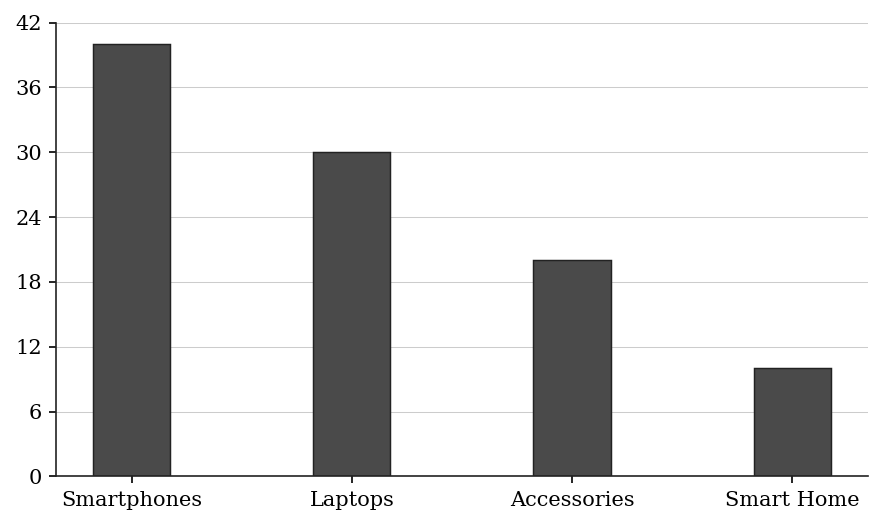
| Year | Revenue ($ millions) |
|---|---|
| 2019 | 120 |
| 2020 | 96 |
| 2021 | 108 |
| 2022 | 135 |
| 2023 | 150 |
(A) $96 million
(B) $108 million
(C) $120 million
(D) $135 million
(E) $150 million
Q2 · DAT-MGS-007 · QC · 70s
Use the following data for this question.
SET 2 — WESTFIELD UNIFIED SCHOOL DISTRICT: Enrollment & Graduation
The Line Graph shows total student enrollment across all grades, in thousands of students, for the years 2018 through 2023. The Pie Chart breaks down the 2023 enrollment by school level, as a percentage of 2023 total enrollment; its values are listed in the table below.
Quantity A: Number of High School students enrolled in 2023 Quantity B: Number of Elementary students enrolled in 2021
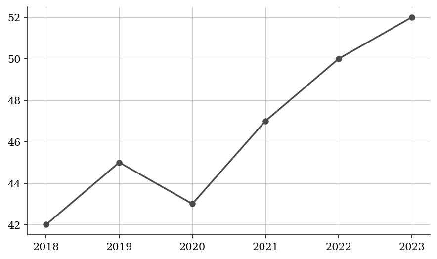
| School Level | Percentage of 2023 Enrollment |
|---|---|
| Elementary | 45% |
| Middle | 25% |
| High School | 30% |
Q3 · DAT-MXG-005 · QC · 55s
Bar Chart — Store Sales (units):
Table — Store B's Sales by Category:
Quantity A: Electronics units sold at Store B Quantity B: Total units sold at Store A
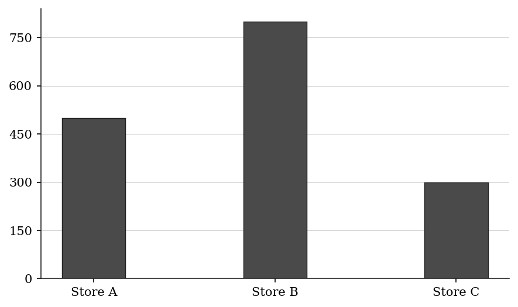
| Category | Share of Store B sales |
|---|---|
| Clothing | 25% |
| Electronics | 45% |
| Furniture | 30% |
Q4 · DAT-MXG-007 · Numeric Entry · 50s
Bar Chart - Annual Donations Received ($000s):
2019: 500 2020: 600 2021: 700 2022: 800
Pie Chart - 2022 Donations by Donor Type:
Individuals 40%, Corporations 35%, Foundations 25%
How many thousand dollars did Foundations donate in 2022?
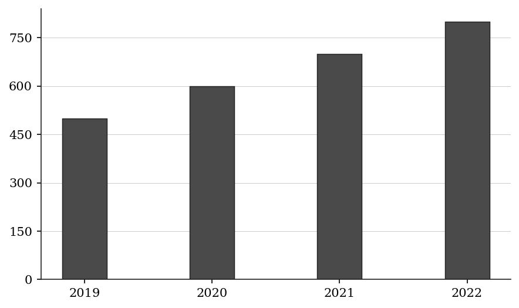
| Donor Type | Share of 2022 Donations |
|---|---|
| Individuals | 40% |
| Corporations | 35% |
| Foundations | 25% |
Numeric entry — write the number.
Q5 · DAT-PCG-001 · MCQ · 45s
The bar chart shows annual sales revenue (in $millions):
What was the percent change in revenue from 2019 to 2020?
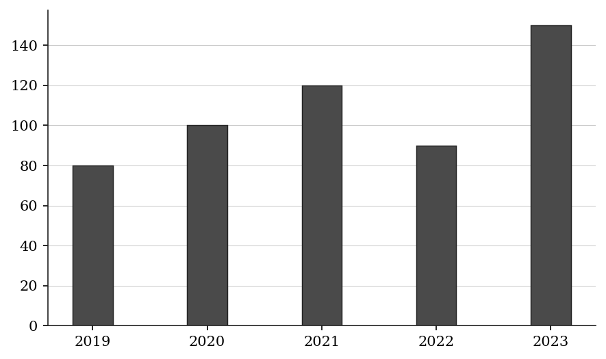
(A) 20%
(B) 25%
(C) 80%
(D) 100%
(E) 125%
Q6 · DAT-PCG-003 · Numeric Entry · 40s
The bar chart shows a city's population (in thousands):
By what percent did the population increase from 2015 to 2016?
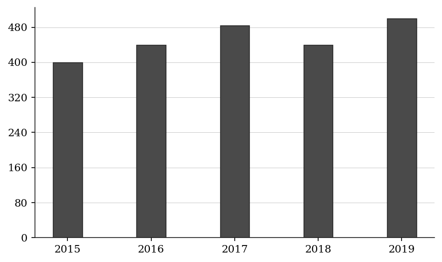
Numeric entry — write the number.
Q7 · DAT-PCG-KMF-011 · MCQ · 60s
At a school with 800 students, each student said whether he or she belongs to each of six clubs. The table shows the percent of the 800 students who belong to each club.
By what percent is the Debate club's membership smaller than the Robotics club's membership?
| Club | Percent of the 800 students |
|---|---|
| Robotics | 48% |
| Choir | 41% |
| Debate | 36% |
| Chess | 32% |
| Drama | 28% |
| Photography | 22% |
(A) 12%
(B) 25%
(C) 33%
(D) 75%
(E) 133%
Level 2 · Medium — 16 questions · ~22 min
two or three steps, one planted trap each
Q8 · DAT-MGS-008 · Numeric Entry · 65s
Use the following data for this question.
SET 2 — WESTFIELD UNIFIED SCHOOL DISTRICT: Enrollment & Graduation
The Line Graph shows total student enrollment across all grades, in thousands of students, for the years 2018 through 2023. The Pie Chart breaks down the 2023 enrollment by school level, as a percentage of 2023 total enrollment; its values are listed in the table below.
The number of Elementary School students in 2023 was how many more than the number of High School students in 2023?

| School Level | Percentage of 2023 Enrollment |
|---|---|
| Elementary | 45% |
| Middle | 25% |
| High School | 30% |
Numeric entry — write the number.
Q9 · DAT-MGS-010 · MCQ · 70s
Use the following data for this question.
SET 3 — RIVER COUNTY POPULATION STUDY
Table 2 shows the population of each of four cities, in thousands, in 2015, 2020, and 2023. Bar Chart 2 shows the percentage of each city's 2023 population that was aged 65 or older.
Approximately how many residents aged 65 or older lived in Brentville in 2023?

| City | 2015 Population | 2020 Population | 2023 Population |
|---|---|---|---|
| Alderton | 80 | 88 | 96 |
| Brentville | 120 | 126 | 132 |
| Clarksburg | 60 | 72 | 78 |
| Dunmore | 40 | 44 | 40 |
(A) 20,400
(B) 25,200
(C) 26,400
(D) 30,000
(E) 33,000
Q10 · DAT-MGS-011 · Select all that apply · 90s
Use the following data for this question.
SET 3 — RIVER COUNTY POPULATION STUDY
Table 2 shows the population of each of four cities, in thousands, in 2015, 2020, and 2023. Bar Chart 2 shows the percentage of each city's 2023 population that was aged 65 or older.
In which of the following cities did the number of residents aged 65 or older exceed 14,000 in 2023?
Select all that apply.

| City | 2015 Population | 2020 Population | 2023 Population |
|---|---|---|---|
| Alderton | 80 | 88 | 96 |
| Brentville | 120 | 126 | 132 |
| Clarksburg | 60 | 72 | 78 |
| Dunmore | 40 | 44 | 40 |
(A) Alderton
(B) Brentville
(C) Clarksburg
(D) Dunmore
Q11 · DAT-MGS-012 · QC · 80s
Use the following data for this question.
SET 3 — RIVER COUNTY POPULATION STUDY
Table 2 shows the population of each of four cities, in thousands, in 2015, 2020, and 2023. Bar Chart 2 shows the percentage of each city's 2023 population that was aged 65 or older.
Quantity A: Percent population growth of Clarksburg from 2015 to 2023 Quantity B: Percent population growth of Alderton from 2015 to 2023
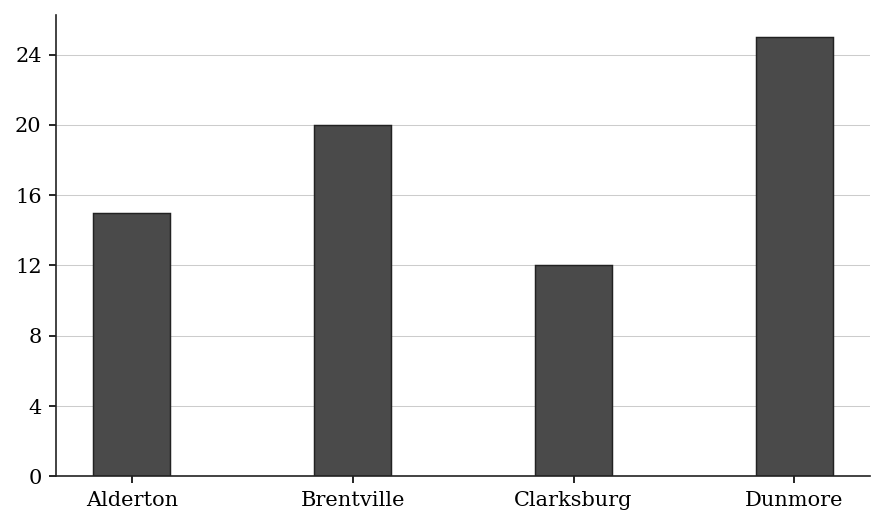
| City | 2015 Population | 2020 Population | 2023 Population |
|---|---|---|---|
| Alderton | 80 | 88 | 96 |
| Brentville | 120 | 126 | 132 |
| Clarksburg | 60 | 72 | 78 |
| Dunmore | 40 | 44 | 40 |
Q12 · DAT-MXG-011 · MCQ · 75s
Bar Chart — Units Sold by Month (Q1):
Table — Q1 Product Category Mix (applied uniformly each month):
What is the total number of Category Beta units sold across all three months of Q1?
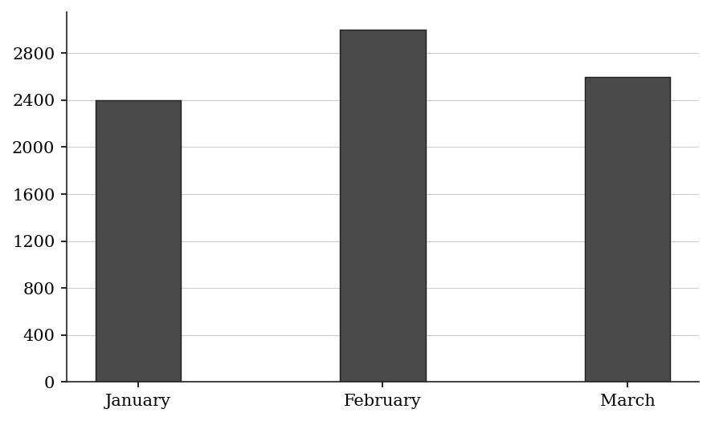
| Category | Share of units |
|---|---|
| Category Alpha | 35% |
| Category Beta | 40% |
| Category Gamma | 25% |
(A) 2,800
(B) 3,000
(C) 3,200
(D) 3,360
(E) 3,600
Q13 · DAT-MXG-013 · QC · 65s
Bar Chart — Students Enrolled per School:
Table — School Q's Enrollment by Grade:
Quantity A: Number of Grade 9 students at School Q Quantity B: Total enrollment at School R
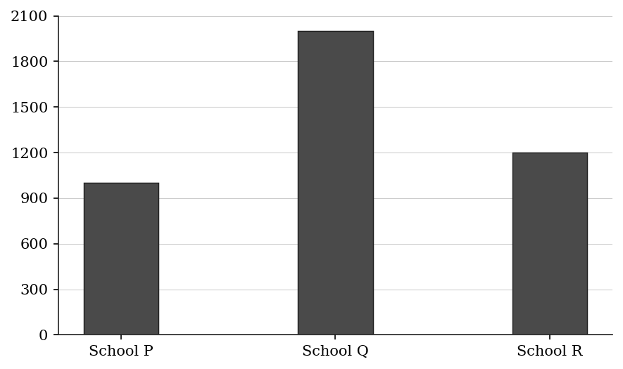
| Grade | Share of School Q enrollment |
|---|---|
| Grade 9 | 28% |
| Grade 10 | 26% |
| Grade 11 | 24% |
| Grade 12 | 22% |
Q14 · DAT-MXG-018 · Select all that apply · 80s
Bar Chart — Inventory Units by Warehouse:
Table — Warehouse 1 Inventory by Category:
Which of the following quantities are greater than 2,000 units? Indicate all such quantities.
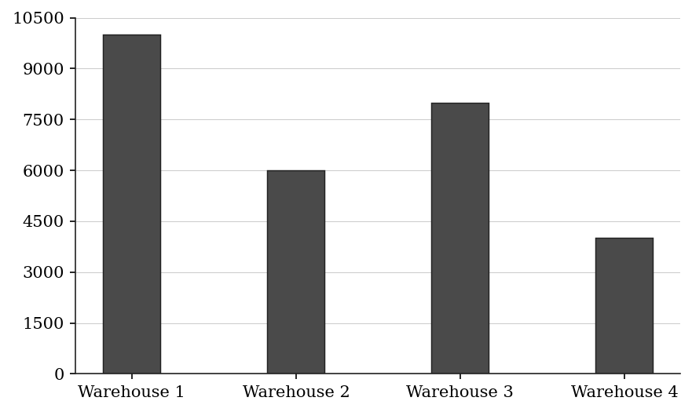
| Category | Share of Warehouse 1 inventory |
|---|---|
| Electronics | 30% |
| Clothing | 25% |
| Food | 20% |
| Tools | 15% |
| Other | 10% |
(A) Electronics units in Warehouse 1
(B) Clothing units in Warehouse 1
(C) Food units in Warehouse 1
(D) Tools units in Warehouse 1
(E) Other units in Warehouse 1
Q15 · DAT-MXG-030 · Numeric Entry · 130s
Bar Chart — Total Advertising Budget by Company ($millions):
Pie Chart — Company B's Budget Allocation:
Table — ROI per $million spent, by channel:
TV: 3.2x, Digital: 4.5x, Print: 2.0x, Sponsorships: 1.5x
Company B reallocates 10 percentage points from TV to Digital (TV becomes 25%, Digital becomes 50%), keeping the same total budget.
By how much does Company B's total revenue output change (in $millions) after the reallocation? Enter a positive number if it increases, negative if it decreases. Round to one decimal place.
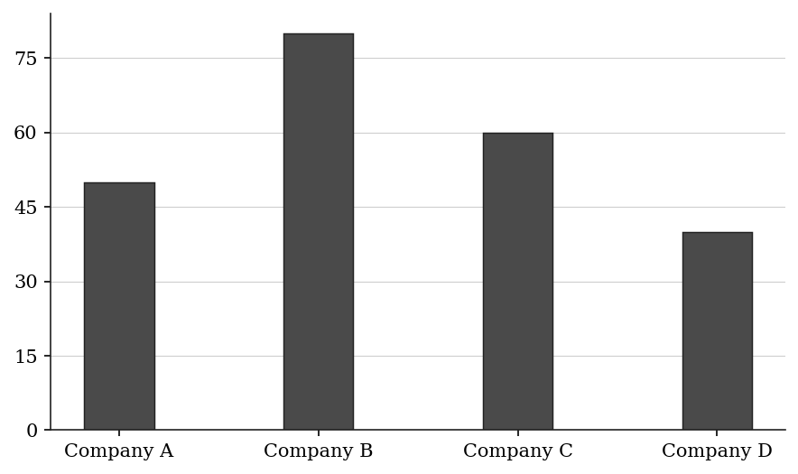
| Channel | Company B Budget Share | ROI per $million Spent |
|---|---|---|
| TV | 35% | 3.2x |
| Digital | 40% | 4.5x |
| 15% | 2.0x | |
| Sponsorships | 10% | 1.5x |
Numeric entry — write the number.
Q16 · DAT-MXG-KMF-002 · MCQ · 90s
The table gives enrollment at five campuses of a state college system, and the pie chart shows how the part-time students at Campus E in 2015 were distributed across program areas. About what percent of the 2015 enrollment of all five campuses combined consisted of Campus E's part-time Nursing students?
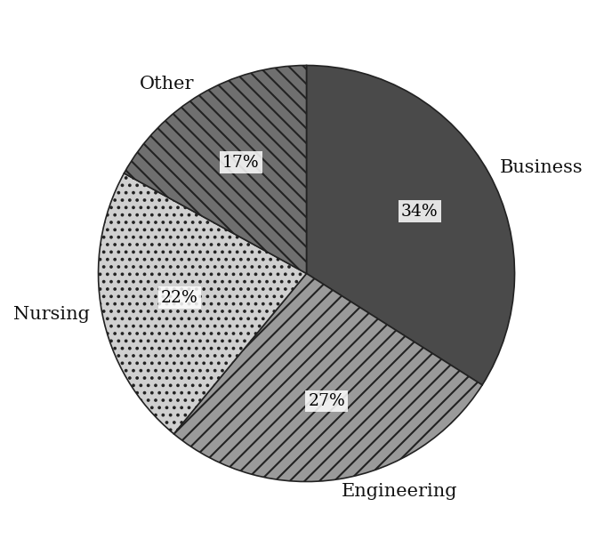
| Campus | Total enrollment 1995 | Total enrollment 2015 | Part-time students 1995 | Part-time students 2015 |
|---|---|---|---|---|
| A | 18,400 | 21,700 | 5,200 | 7,900 |
| B | 12,300 | 9,800 | 4,100 | 3,400 |
| C | 8,900 | 11,200 | 1,800 | 4,500 |
| D | 15,600 | 14,900 | 6,300 | 5,800 |
| E | 7,400 | 12,600 | 2,300 | 6,100 |
| Total | 62,600 | 70,200 | 19,700 | 27,700 |
(A) 2%
(B) 5%
(C) 11%
(D) 22%
(E) 34%
Q17 · DAT-MXG-KMF-013 · MCQ · 110s
The pie chart shows 1999 sales of coffee shops in County Y by chain, and the table shows how many chains and shops operated in each year. Assume that every coffee shop in the county belongs to one of the chains counted in the table. In 1999 the chain Q operated 40 of the shops in the county. Approximately how much greater, in dollars, were chain Q's average sales per shop than the average sales per shop of all of the other shops in the county?
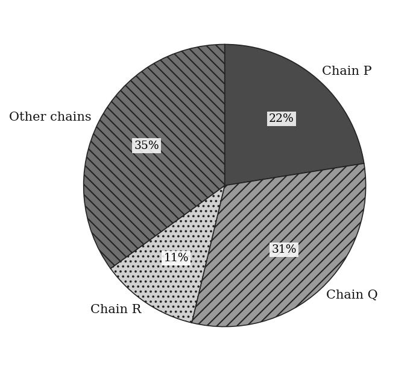
| Year | Number of chains | Total shops in the chains |
|---|---|---|
| 1995 | 18 | 190 |
| 1996 | 17 | 185 |
| 1997 | 15 | 170 |
| 1998 | 13 | 165 |
| 1999 | 12 | 160 |
(A) $62,000
(B) $83,000
(C) $229,000
(D) $250,000
(E) $313,000
Q18 · DAT-PCG-010 · MCQ · 80s
The bar chart shows annual production output (in thousands of units):
In which year-to-year period was the percent DECREASE the greatest in magnitude?
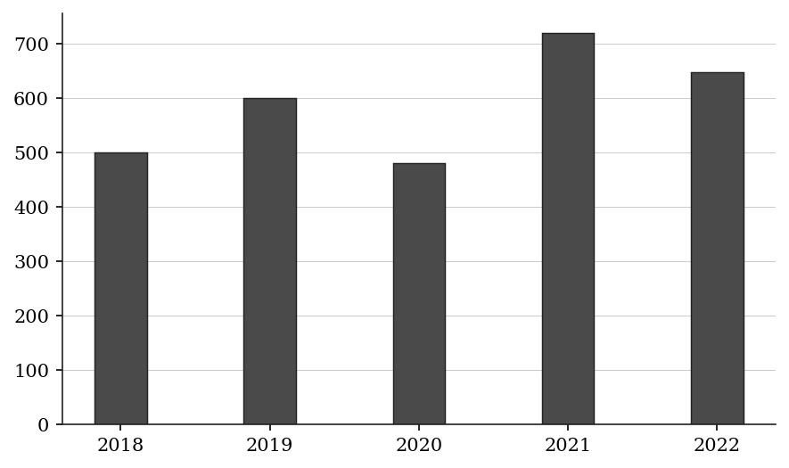
(A) 2019 to 2020
(B) 2021 to 2022
(C) The two decreases are equal in percent
(D) 2018 to 2019
(E) 2020 to 2021
Q19 · DAT-PCG-011 · QC · 70s
A bar chart shows the inflation rate (%) in two countries:
Country X: 2020: 4%, 2021: 6%
Country Y: 2020: 10%, 2021: 13%
Quantity A: Percent change in Country X's inflation rate from 2020 to 2021 Quantity B: Percent change in Country Y's inflation rate from 2020 to 2021
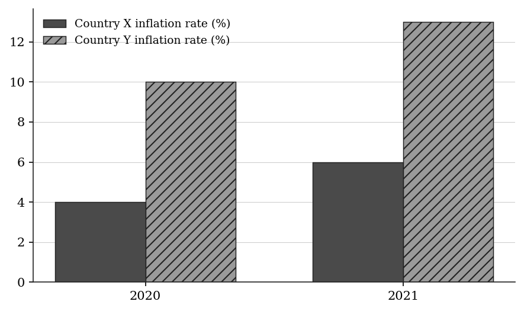
Q20 · DAT-PCG-016 · Numeric Entry · 75s
The bar chart shows a restaurant's weekly revenue (in $thousands):
If revenue in Week 6 increases by 25% compared to Week 5, what is the percent change in revenue from Week 1 to Week 6?
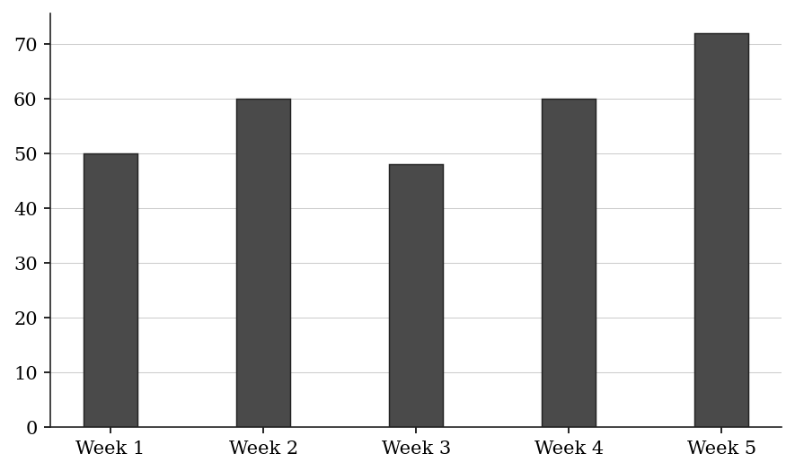
Numeric entry — write the number.
Q21 · DAT-PCG-017 · MCQ · 70s
A line graph shows the enrollment at a university (in thousands of students):
The enrollment grew by the same percent each year from 2015 to 2019. What was the annual growth rate?
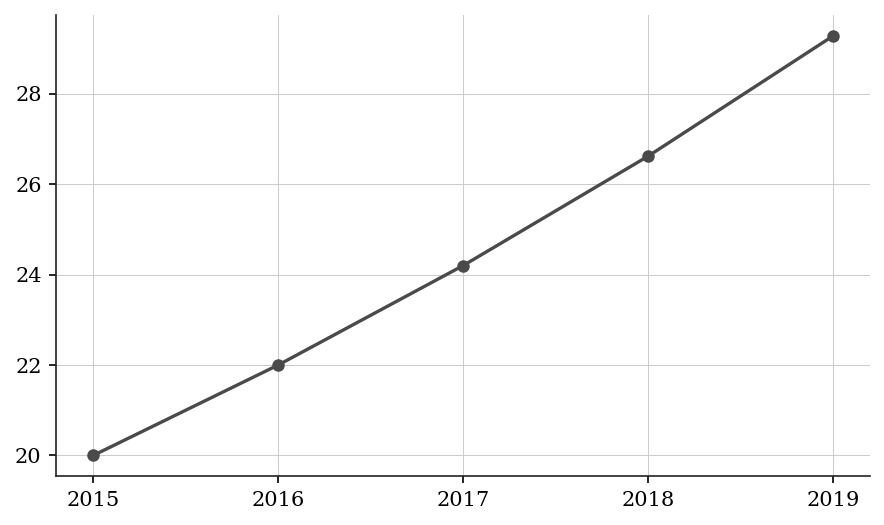
(A) 5%
(B) 8%
(C) 10%
(D) 12%
(E) 46.4%
Q22 · DAT-PCG-018 · Select all that apply · 95s
The bar chart shows the number of subscribers (in millions) for two streaming platforms:
Platform A: 2020: 10, 2021: 13, 2022: 16.9, 2023: 18.59
Platform B: 2020: 20, 2021: 22, 2022: 26.4, 2023: 29.04
In which periods did Platform A grow at a faster percent rate than Platform B? Select all that apply.
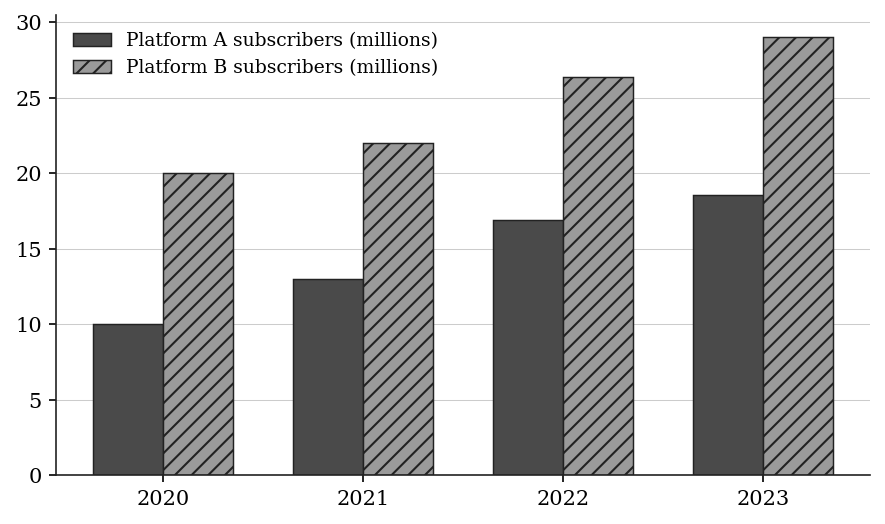
(A) 2020 to 2021
(B) 2021 to 2022
(C) 2022 to 2023
(D) 2020 to 2023 (overall period)
(E) None of the above
Q23 · DAT-PCG-019 · QC · 70s
A bar chart shows a country's GDP (in $billions):
Quantity A: Percent change in GDP from 2010 to 2015 Quantity B: Percent change in GDP from 2015 to 2020
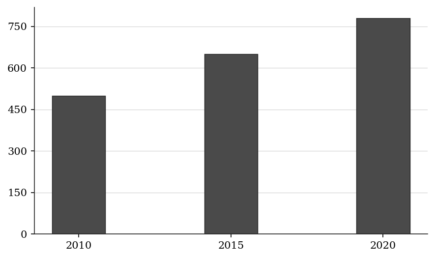
Level 3 · Hard — 7 questions · ~12 min
where 162+ is won or lost
Q24 · DAT-MGS-016 · Select all that apply · 95s
Use the following data for this question:
SET 4 - NATIONAL BASKETBALL LEAGUE STATS: Team Performance
Table 3 below shows the season records for selected teams. The line graph below shows the Eagles' monthly win totals from October through March.
Which of the following months in the Eagles' win total was strictly above the team's average monthly wins for the season?
Select all that apply.
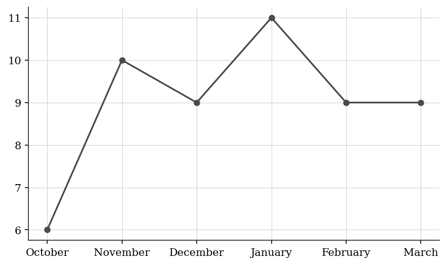
| Team | Games Played | Wins | Losses | Points For (avg/game) | Points Against (avg/game) |
|---|---|---|---|---|---|
| Eagles | 82 | 54 | 28 | 112 | 105 |
| Wolves | 82 | 47 | 35 | 108 | 107 |
| Panthers | 82 | 38 | 44 | 104 | 109 |
| Ravens | 82 | 29 | 53 | 98 | 114 |
(A) October
(B) November
(C) December
(D) January
(E) February
Q25 · DAT-MGS-022 · Numeric Entry · 85s
Use the following data for this question:
SET 6 - COUNTY HOSPITAL NETWORK: Patient & Cost Data
Table 4 below shows annual patient admissions by department. Line Graph 2 below shows the average cost per admission, in dollars, by year.
Approximately what was the total revenue generated by the Cardiology department in 2023? Give your answer in millions of dollars, rounded to the nearest tenth.
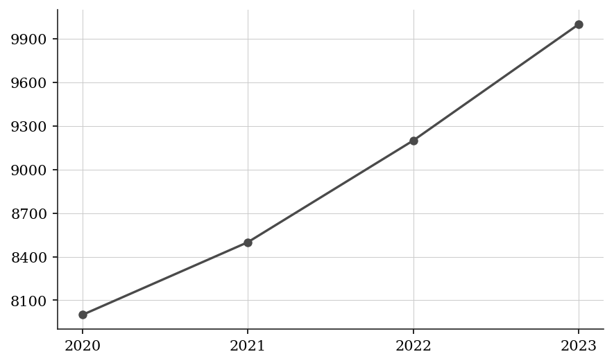
| Department | 2020 | 2021 | 2022 | 2023 |
|---|---|---|---|---|
| Cardiology | 4,800 | 5,100 | 5,400 | 5,700 |
| Orthopedics | 3,200 | 3,400 | 3,600 | 3,800 |
| Neurology | 2,100 | 2,300 | 2,500 | 2,400 |
| General Surgery | 6,500 | 6,200 | 6,800 | 7,200 |
| Pediatrics | 4,400 | 4,600 | 4,500 | 4,700 |
Numeric entry — write the number.
Q26 · DAT-MGS-024 · QC · 95s
Use the following data for this question:
SET 6 - COUNTY HOSPITAL NETWORK: Patient & Cost Data
Table 4 below shows annual patient admissions by department. Line Graph 2 below shows the average cost per admission, in dollars, by year.
Quantity A: Percent change in Neurology admissions from 2021 to 2023 Quantity B: Percent change in average cost per admission from 2021 to 2023

| Department | 2020 | 2021 | 2022 | 2023 |
|---|---|---|---|---|
| Cardiology | 4,800 | 5,100 | 5,400 | 5,700 |
| Orthopedics | 3,200 | 3,400 | 3,600 | 3,800 |
| Neurology | 2,100 | 2,300 | 2,500 | 2,400 |
| General Surgery | 6,500 | 6,200 | 6,800 | 7,200 |
| Pediatrics | 4,400 | 4,600 | 4,500 | 4,700 |
Q27 · DAT-MGS-KMF2-005 · MCQ · 115s
ANNUAL RESIDENTIAL AND COMMERCIAL ENERGY USAGE IN COUNTRY M, BY CATEGORY
The chart gives the percent of total annual residential energy usage for each category, and the table gives the percent of total annual commercial energy usage for each category.
The ratio of the total annual residential energy usage to the total annual commercial energy usage is x to y. Which of the following represents the fraction of the total annual energy usage, residential and commercial together, that is for lighting?
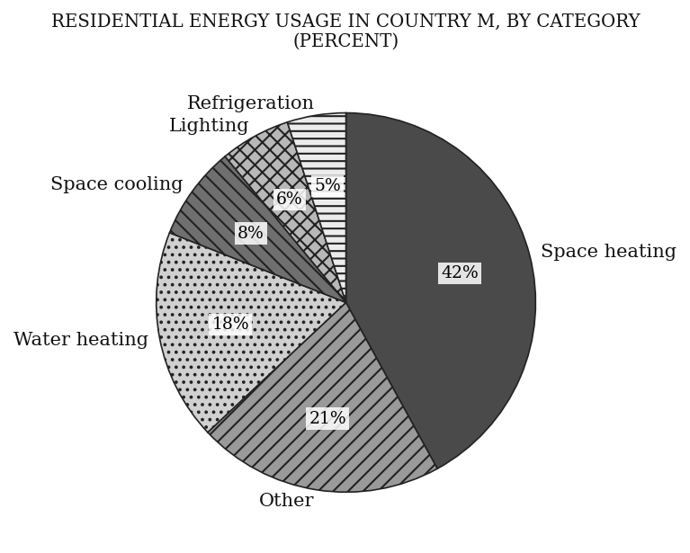
| Category | Percent of commercial usage |
|---|---|
| Space heating | 25% |
| Other | 23% |
| Lighting | 20% |
| Space cooling | 14% |
| Water heating | 10% |
| Refrigeration | 4% |
| Cooking | 2% |
| Computers | 2% |
(A) (6x + 20y)/(100(x + y))
(B) (6x + 20y)/(x + y)
(C) (3x + 10y)/(x + y)
(D) 26(x + y)/100
(E) (6x + 20y)/200
Q28 · DAT-MXG-021 · MCQ · 100s
Table - Total Revenue by Quarter ($millions):
Q1: 80, Q2: 100, Q3: 120, Q4: 140
Table - Q4 Revenue by Segment:
Segment A: 35%, Segment B: 30%, Segment C: 20%, Segment D: 15%
If Segment A's Q4 revenue grew by 40% from Q3 to Q4, what was Segment A's revenue in Q3 (in $millions)?
(A) 28
(B) 30
(C) 33
(D) 35
(E) 42
Q29 · DAT-MXG-027 · Select all that apply · 115s
Line Graph — Quarterly Net Income ($millions):
Table — Q4 2023 Net Income by Business Unit:
Which of the following statements are true? Select all that apply.
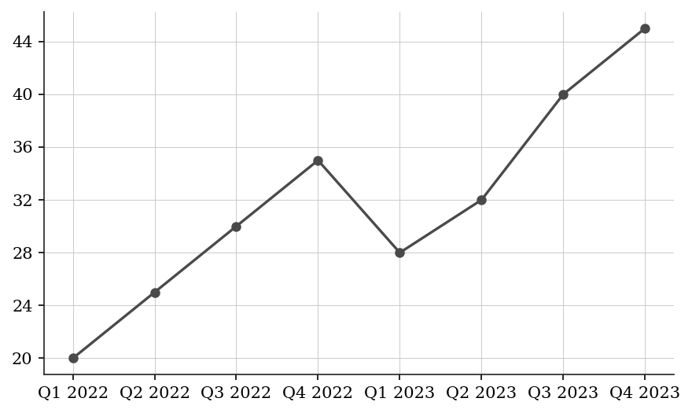
| Business unit | Share of Q4 2023 net income |
|---|---|
| Unit A | 40% |
| Unit B | 30% |
| Unit C | 20% |
| Unit D | 10% |
(A) Unit A's Q4 2023 income exceeds Q2 2022 net income
(B) Unit B's Q4 2023 income exceeds Unit C's Q4 2023 income by exactly $4.5 million
(C) Unit A's Q4 2023 income exceeds the combined Q4 2023 income of Units C and D
(D) Unit A's Q4 2023 income is greater than Q1 2023 net income
(E) Q4 2023 total income strictly exceeds the sum of Q1 and Q2 net income in 2022
Q30 · DAT-PCG-021 · MCQ · 90s
The bar chart shows a retail store's gross margin (%) and total revenue ($millions) over three years:
Gross Margin: 2021: 40%, 2022: 45%, 2023: 42%
Total Revenue: 2021: $200M, 2022: $180M, 2023: $220M
Gross profit = gross margin × total revenue.
What was the percent change in gross profit from 2021 to 2023?
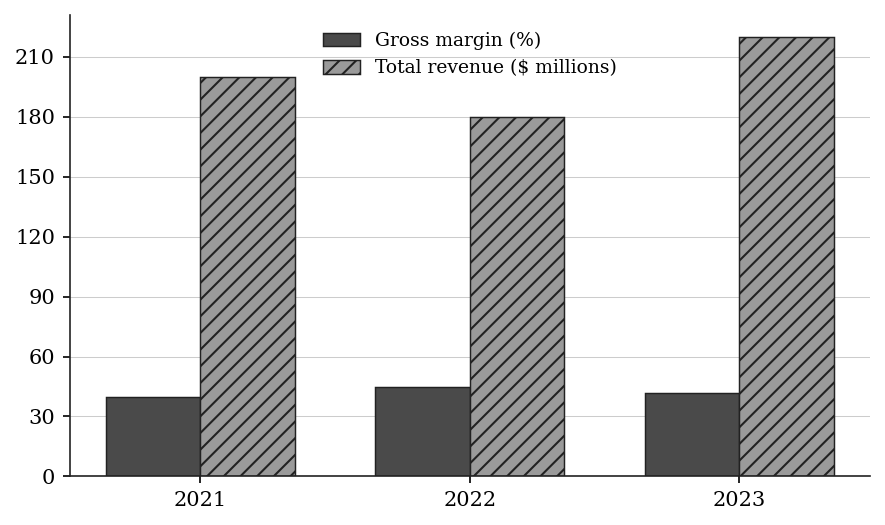
(A) 5%
(B) 10%
(C) 12%
(D) 15.5%
(E) 20%
The rest of this sheet is part of Pro
All 30 questions, the answer key and full worked solutions with every trap named — plus 75 concept notes and 5,868 questions.